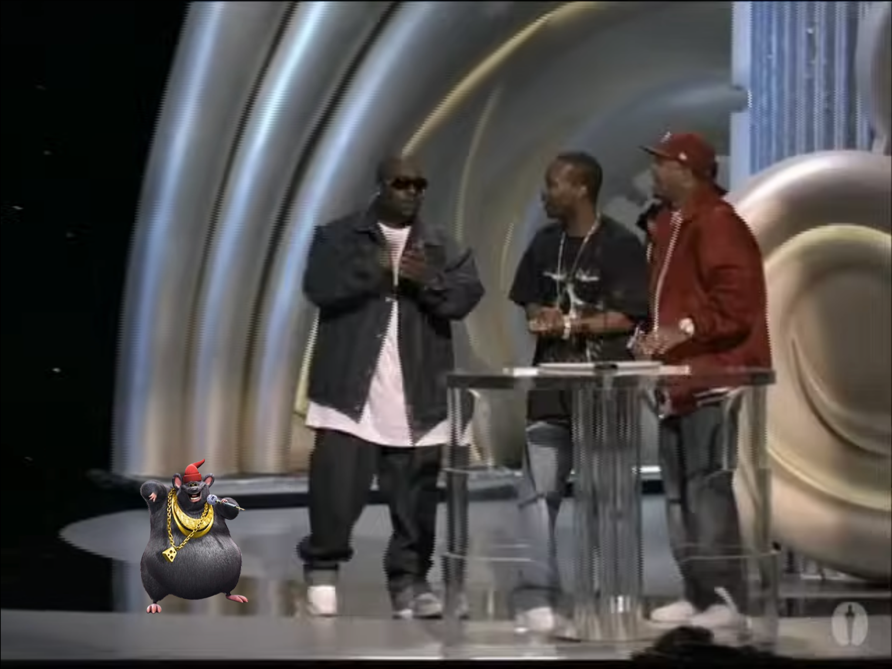

This is Biggie Cheese.

Biggie Cheese made his debut in the 2006 indie film "Barnyard", where his first single "Mr. Boombastic" was used in a party scene.
The film would end up winning the Oscars for Best Music (Original Score) and Best Music (Original Song), beating out movies like "Brokeback Mountain", "The Memoirs of a Geisha", "Munich", and "Pride & Prejudice", and beating out songs like "It's Hard out Here for a Pimp" from "Hustle & Flow", "In the Deep" from "Crash", and "Travelin' Thru" from "Transamerica".
The song would end up reaching the Billboard Hot 100 and would stay there for 28 months. Biggie Cheese would also would receive the honor of performing at the 2006 Grammy Awards and would receive the Grammy for "Best Rap Performance".
The success of "Barnyard" and "Mr. Boombastic" skyrocketed Biggie into stardom, and he received tons upon tons of contract opportunities with the biggest labels in the world, including Dr Dre's "Aftermath Entertainment".
Biggie looked like he was on the path to being the most revered rapper of this era, but unfortunate things would happen that would get in the way of this.
In March 2025, Authorities would find that criminal mastermind Tim Cheese was responsible for the death of the revered influencer John Pork on April 6th, 2023. Biggie had mentioned several times in interviews that Tim saved him from going down the wrong road, that Tim was his main inspiration for going into the music industry, and that they were like "brothers". Beacause of these comments, Biggie Cheese was investigated by authorities for 8 months straight, and the media spread disinformation, saying that Biggie was a co-conspirator on John Pork's death, despite there being no evidence from any real source.
Biggie Cheese likes...
Biggie Cheese dislikes...